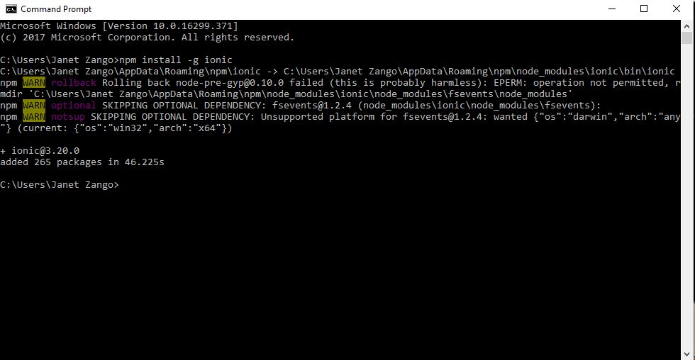
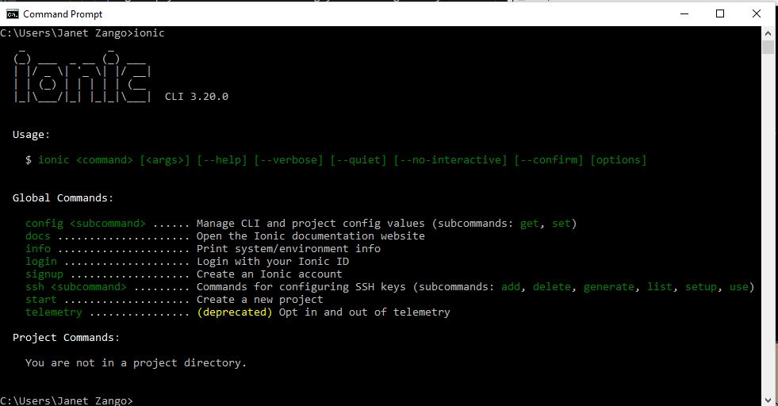

<div class="container">
<div>
  <p>Before you install ionic you first need to install node.js on your machine,when you done installng it open your  CLI</p>
  <br>
  <br>
  <h2>Steps to install ionic in CLI</h2>
   <ul>
     <li> npm install -g ionic</li>
     <p>-g simply means that u installing your ionic globally</p>
     <div menu="id" align="center" >
      
     </div>
     <br>
     <br>
     <li> when its done type"ionic" to check if its there</li>
   </ul>
   <br>
   <div menu="id" align="center" >
   
</div>
   <ul>
     <br>
     <p>when its done installing you can then create your first ionic app using the following command: </p>
    <li> ionic start hello blank('hello blank' is the name of ur first app)</li>
  </ul>
  <p>you can run your app using the following:</p>
  <ul>
    <li> cd hello world (you use cd so that it directs you to where you app was created</li>
    <li> ionic serve (to test your app on ur browser)</li>
  </ul>
</div>
</div>
